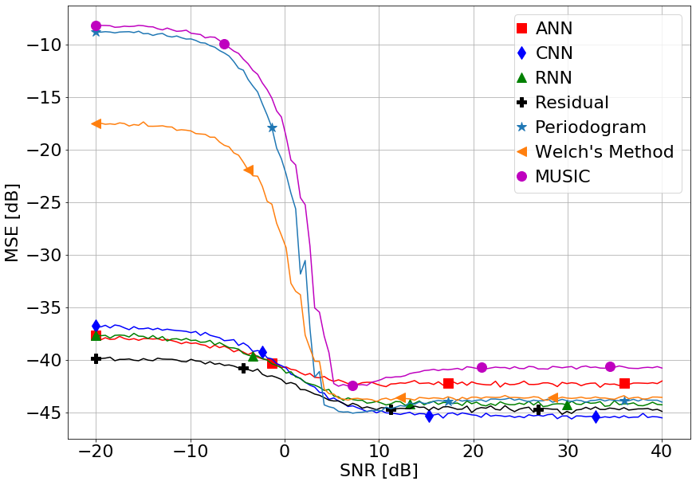

Research
Making Neural Networks useful to Wireless Communication
The short of it is: I do machine learning for wireless communications problems.
So far this has been particularly held back by many initial ideas held about
machine learning and deep learning specifically which are no longer applicable. My first paper,
which was accepted for a special session on mmWave and Terahertz systems and algorithms,
specifically investigates the validity of deep learning for signal processing. We
target the problem of estimating the carrier frequency offset of a one-bit quantized signal with
short block lengths and low SNR. In many cases, there is accurate estimation algorithm
with such limited information, especially when considering the requirements for mmWave
systems and beyond. We show that the use of convolutional neural networks are able to
scale efficiently for massive MIMO situations, where there are numerous, short, receive blocks.
We also show that using training data with quantized data samples from signals with
SNR between 0-10dB leads to estimators which are much more accurate than classical
signal processing techniques. In subsequent research, we will include channel estimation,
phase estimation, and test with new wave forms.
